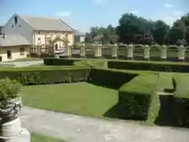

SRBIJA
Oba klasicistička dvorca, u parkovskom okruženju, sagrađena su za plemićku porodicu Stratimirović. Manji dvorac je izgrađen krajem 18. veka, a veći je
izgrađen polovinom 19. veka. Prema projektu arh. Momčila Tapavice, obnova i rekonstrukcija urađena je 1912.

Porodica Stratimirović, je dala više istorijskih ličnosti: mitropolit Stevan Stratimirović, Đorđe Stratimirović – komandant Srpske vojske u revoluciji
1848/49. godine, i bila je jedna od najznačajnijih srpskih porodica u Habzburškoj monarhiji. Stratimirovići su jedna od retkih srpskih porodica koja je
među prvima stekla plemstvo za vojničke zasluge u austrijskoj carevini 1745. od Marije Terezije. Jedno kratko vreme, imanje je od Stratimirovića,
otkupio Matej Semzo od Kamjonike, ali je 1889. imanje prodao je Lazaru Dunđerskom, koji je kao i njegov sin Đorđe znatno doprineo razvoju i
modernizaciji poljoprivrede u Kulpinu.
Veliki dvorac je prizemna zgrada izuzetno skladnih proporcija sa karakterističnom pristupnom rampom u kojoj je smešten glavni ulaz. Sa dvorišne strane
se nalazi visoki parter sa polukružnom terasom. Glavnom fasadom dominira klasicistički portik sa stepeništem, pristupnim rampama i četiri para jonskih
stubova koji nose arhitrav i timpanon. Prozori su ukrašeni sa polurozetama sa figurama orlova. Iznad krovnog venca se nalazi atika sa ornamentisanim
pravougaonim poljima i vazama na uglovima. Sa dvorišne strane se u prizemlju nalazi petougaoni ulazni trem ozidan punim zidovima, sa kružnim otvorima
na bočnim stranama. Na spratu se nalazi prostrana terasa – loža petostrane osnove pokrivena kupolom na kaneliranim stubovima. Iz prostranog hola koji
predstavlja centralnu komunikacionu prostoriju iz koje se dugačkim hodnikom ulazi u sve ostale prostorije u dvorcu. Porodica Dunđerski je zadržala
posed sve do nacionalizacije 1945.
Park u okviru veleposeda je i nekada predstavljao prvorazredno umetničko delo hortikulurne i vrtne umetnosti. U velikom dvorcu se danas nalazi
Poljoprivredni muzej. Danas mali dvorac je pretvoren u mesnu kancelariju i kancelarije kulpinskih udruženja građana. Oba dvorca su spomenici kulture
od velikog značaja.